01បំបែក · Break it apartពីរព្យាង្គ
ពាក្យពីរព្យាង្គ អានចង្វាក់ទីមួយស្រាល ចង្វាក់ទីពីរធ្ងន់ ដូចជា «អា-ហារ»។
Two-syllable words: light first beat, heavier second — អា-ហារ “food”.
Two-syllable words · មេរៀនទី ៣ · Lesson 3 of ភាសាខ្មែរ កម្រិត ១
ពាក្យខ្មែរភាគច្រើនមានពីរព្យាង្គ។ ព្យាង្គទីមួយអានស្រាលៗ ព្យាង្គទីពីរអានខ្លាំងជាង។
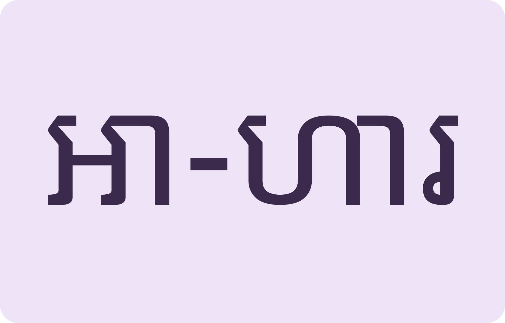
ពីរចង្វាក់Two beats: light then strong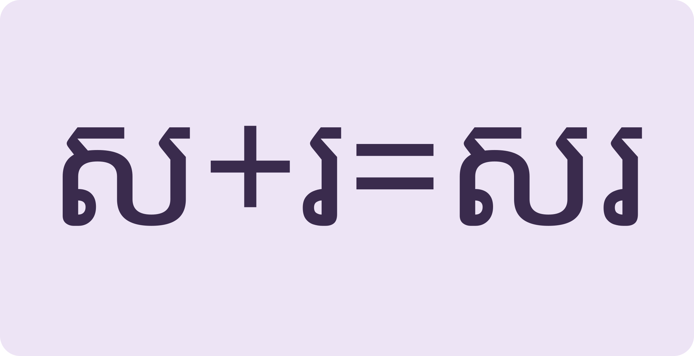
បំបែក រួចផ្ទុំវិញSplit the word, build it back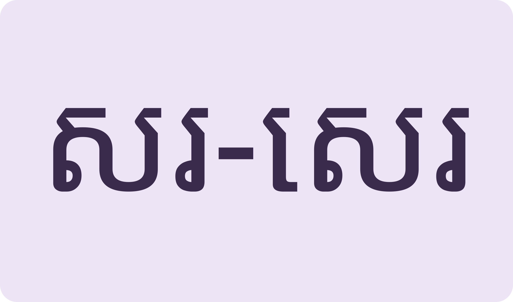
អក្សរដូច សំឡេងអាចខុសSame letters can hide different wordsSplit two-syllable words, rebuild them from letters, then read the hobby passage.
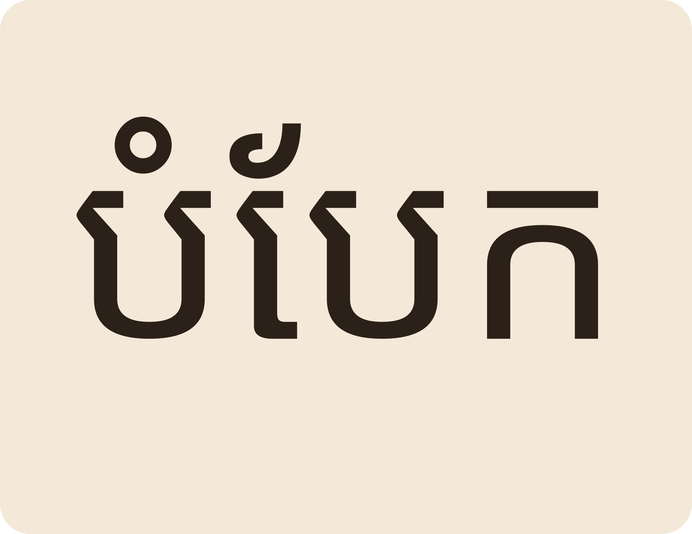
Space listen · ← → move · K show text
ពាក្យពីរព្យាង្គ អានចង្វាក់ទីមួយស្រាល ចង្វាក់ទីពីរធ្ងន់ ដូចជា «អា-ហារ»។
Two-syllable words: light first beat, heavier second — អា-ហារ “food”.
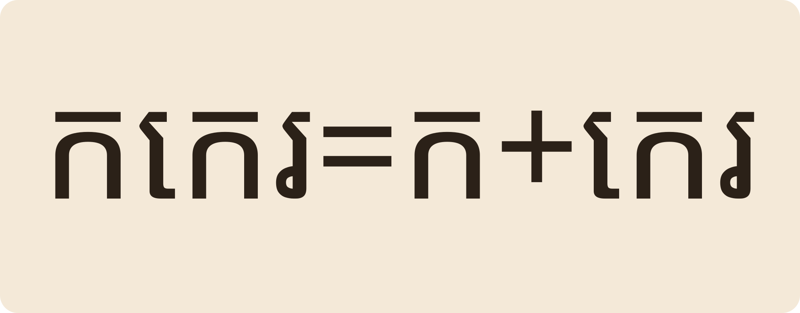
ឧទាហរណ៍ «កកេរ» = ក + កេរ។ សូមបំបែក «សរសេរ» តាមវិធីដូចគ្នា។
Example: កកេរ = ក + កេរ. Now split សរសេរ the same way.
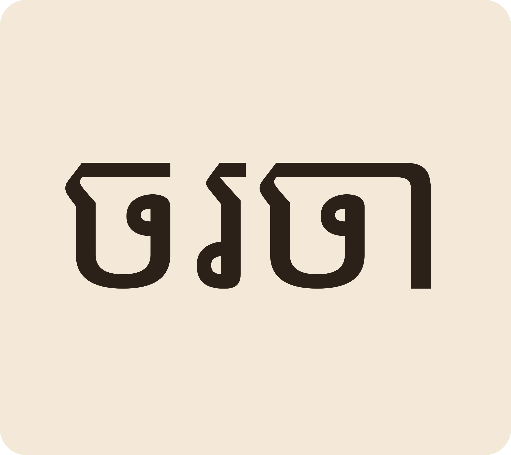
«ចរចា» មានន័យថានិយាយគ្នាដើម្បីឈានដល់កិច្ចព្រមព្រៀង។
ចរចា means to negotiate, to talk toward an agreement.
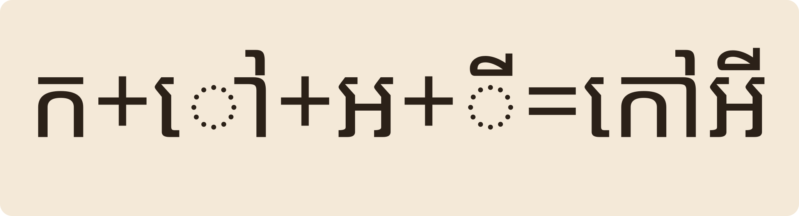
ផ្ទុំពាក្យ៖ ក + ៅ + អ + ី = «កៅអី» (chair)។
Build: ក + ៅ + អ + ី = កៅអី “chair”.
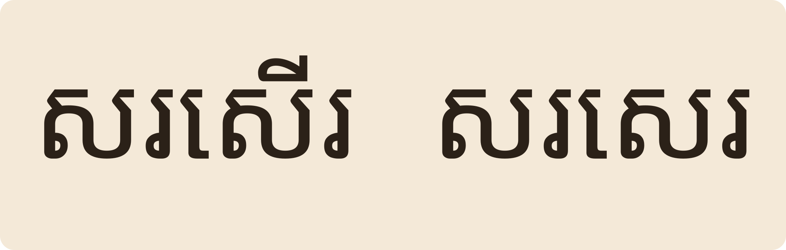
ប្រយ័ត្ន «សរសើរ» (to praise) និង «សរសេរ» (to write) សរសេរជិតដូចគ្នា។
Careful: សរសើរ “praise” and សរសេរ “write” look almost alike.
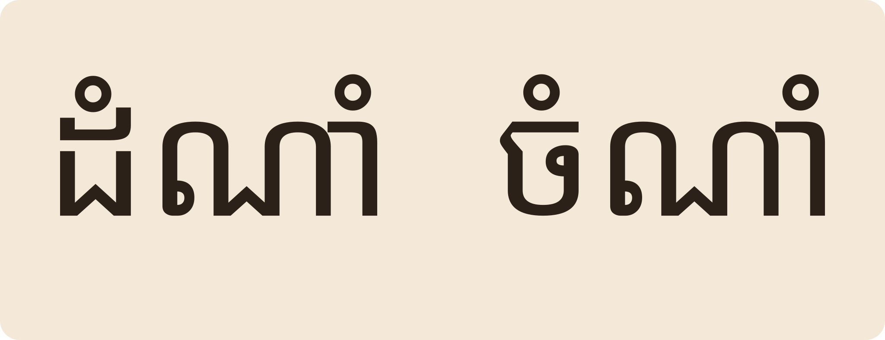
«ដំណាំ» ជាដើមឈើ «ចំណាំ» ជាការទុកក្នុងចិត្ត។
ដំណាំ is a plant; ចំណាំ means to remember / mark.
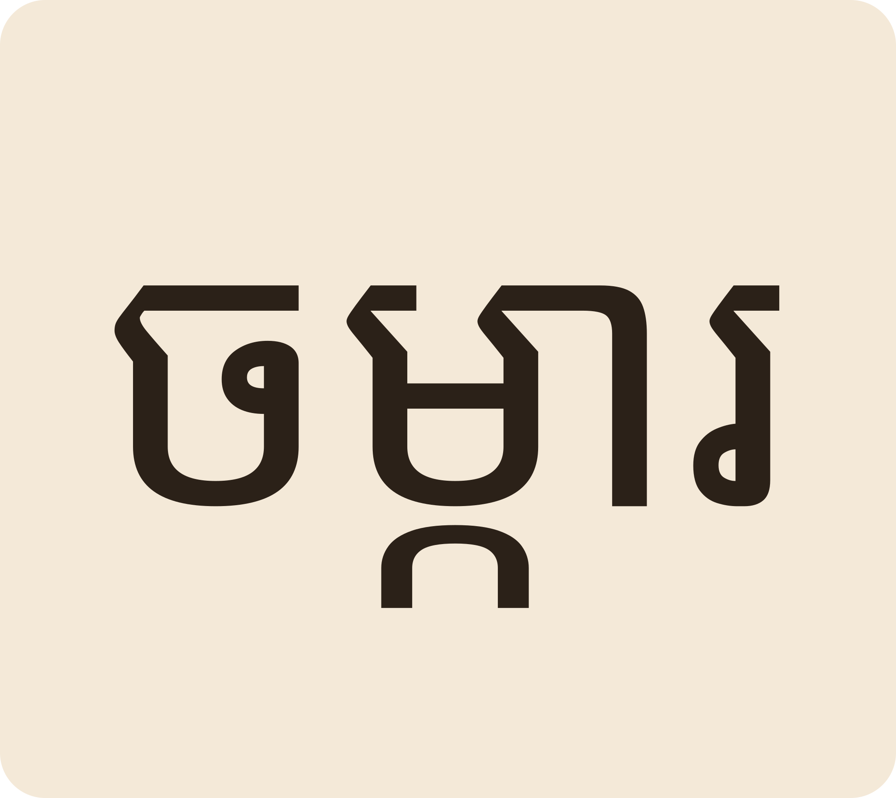
សុខាមានដីចម្ការមួយកន្លែងតាមដងទន្លេ មានដំណាំជាច្រើនមុខ។
Sokha has a plot of farm land along the river with many crops.
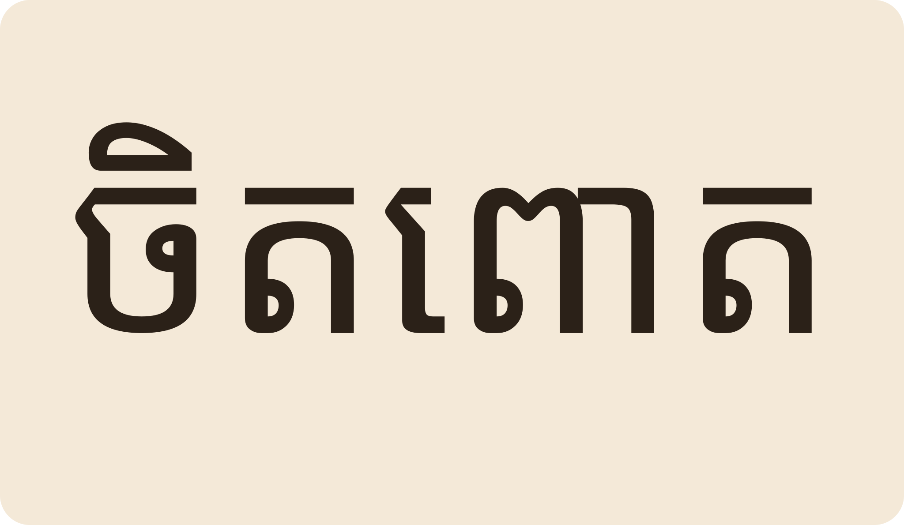
ធីតាចិតពោត រួចដើរទៅទិញទឹកអំពៅ។ នាងដេញចាបហើរចេញទៅ។
Tida shells corn, then goes to buy sugarcane juice. She chases the birds away.
«បបរ» ត្រូវ។ សរសេរពីរព្យាង្គដោយអក្សរពិត មិនចាំបាច់មានសញ្ញាផ្សេងទេ។
«បបរ» is correct — plain two-syllable spelling, no extra marks.
ព្រោះ «ឆ» ជាពួកអ «ឋ/ថ» សំឡេងខុសគ្នា។ «ឆៅ» raw មានសំឡេងពួកអ។
Each syllable keeps its own consonant family, so the vowel colours differ.
បាទ/ចាស ទាំងពីរចាប់ផ្តើម «អា»។ ន័យខុសគ្នា៖ អាហារ food, អាកាស sky/air។
Yes — both start អា; meanings differ: food vs sky/air.
ប្រហាក់ប្រហែល។ «បង្កើនចំណូល» ឬ «បន្ថែមចំណូល» សុទ្ធតែត្រូវ។
Close enough: both បង្កើន and បន្ថែម work with income.
«ចំណាយ» គឺការប្រើប្រាស់លុយ។ ចំណូលចូល ចំណាយចេញ។
ចំណាយ is spending. Income comes in, expenses go out.
Tap a word's play button to hear it. Hide one side, then recall it before you tap to check.
ពាក្យពីរព្យាង្គ អានចង្វាក់ទីមួយស្រាល ចង្វាក់ទីពីរធ្ងន់ ដូចជា «អា-ហារ»។ ឧទាហរណ៍ «កកេរ» = ក + កេរ។ សូមបំបែក «សរសេរ» តាមវិធីដូចគ្នា។ «ចរចា» មានន័យថានិយាយគ្នាដើម្បីឈានដល់កិច្ចព្រមព្រៀង។
Two-syllable words: light first beat, heavier second — អា-ហារ “food”. Example: កកេរ = ក + កេរ. Now split សរសេរ the same way. ចរចា means to negotiate, to talk toward an agreement.
ផ្ទុំពាក្យ៖ ក + ៅ + អ + ី = «កៅអី» (chair)។ ប្រយ័ត្ន «សរសើរ» (to praise) និង «សរសេរ» (to write) សរសេរជិតដូចគ្នា។ «ដំណាំ» ជាដើមឈើ «ចំណាំ» ជាការទុកក្នុងចិត្ត។
Build: ក + ៅ + អ + ី = កៅអី “chair”. Careful: សរសើរ “praise” and សរសេរ “write” look almost alike. ដំណាំ is a plant; ចំណាំ means to remember / mark.
សុខាមានដីចម្ការមួយកន្លែងតាមដងទន្លេ មានដំណាំជាច្រើនមុខ។ ធីតាចិតពោត រួចដើរទៅទិញទឹកអំពៅ។ នាងដេញចាបហើរចេញទៅ។
Sokha has a plot of farm land along the river with many crops. Tida shells corn, then goes to buy sugarcane juice. She chases the birds away.
Q. «បបរ» និង «ប៉ប៉រ»? ពាក្យណាត្រូវ?
Q. Which spelling is right for porridge?
A. «បបរ» ត្រូវ។ សរសេរពីរព្យាង្គដោយអក្សរពិត មិនចាំបាច់មានសញ្ញាផ្សេងទេ។
A. «បបរ» is correct — plain two-syllable spelling, no extra marks.
Q. ហេតុអ្វី «ឆាឆៅ» មិនមែន «ឆាឆៅ» សំឡេងដូចគ្នា?
Q. Why do the two halves of ឆាឆៅ sound different?
A. ព្រោះ «ឆ» ជាពួកអ «ឋ/ថ» សំឡេងខុសគ្នា។ «ឆៅ» raw មានសំឡេងពួកអ។
A. Each syllable keeps its own consonant family, so the vowel colours differ.
Q. «អាហារ» «អាកាស» ចាប់ផ្តើមដូចគ្នាទេ?
Q. Do អាហារ and អាកាស start the same?
A. បាទ/ចាស ទាំងពីរចាប់ផ្តើម «អា»។ ន័យខុសគ្នា៖ អាហារ food, អាកាស sky/air។
A. Yes — both start អា; meanings differ: food vs sky/air.
Q. «បង្កើន» និង «បន្ថែម» ប្រើដូចគ្នាទេ?
Q. Are បង្កើន and បន្ថែម interchangeable?
A. ប្រហាក់ប្រហែល។ «បង្កើនចំណូល» ឬ «បន្ថែមចំណូល» សុទ្ធតែត្រូវ។
A. Close enough: both បង្កើន and បន្ថែម work with income.
Q. «ចំណាយ» ន័យអ្វី?
Q. What does ចំណាយ mean?
A. «ចំណាយ» គឺការប្រើប្រាស់លុយ។ ចំណូលចូល ចំណាយចេញ។
A. ចំណាយ is spending. Income comes in, expenses go out.
ខ្ញុំចូលចិត្តដាំដំណាំ។
I like growing crops.
តើពាក្យនេះមានពីរប៉ុន្មានព្យាង្គ?
How many syllables does this word have?
Say it in your head first, then tap the box to check.